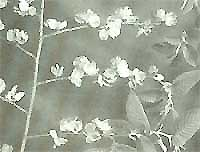
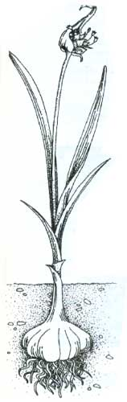

Nature's Penicillin
Alternative medicine, healing herbs: the curative powers of slippery elm and alfalfa.
By Steven Foster
February/March 1995
HERBS AND OLD-TIME REMEDIES
The curative power of garlic, slippery elm, and alfalfa.
RUNK/SCHOENBERGER/GRANT HEILMAN

NORM THOMAS/PHOTORESEARCHERS, INC.
